Oh my word its january! The first month. Named after Jan that woman that michal scott left the office to be with. Some epic highs and lows and i don't know, honestly its friday night i ate some meh chicken for dinner and im just feelin bloated at work people kept asking me questions and at one point i finally sat down and just sighed realising i had started typing a message at 10am and it didnt get sent till 3pm and im now just staring at the bbc uk apprentice like “do i really wanna watch 20 business wannabies compete to suckle on the tit of an old man” and i don't think i do, mostly because im older than most of them but really because i think the buff men are not going to be gay and instead give off wild “bashing you up because you looked at them funny and then calling you a slur and then getting away with it” vibes
anyway
I did end up digging out this shindig to add to my collection of wearing this $10 outfit i got from h&m years ago exclusively on new years eve - and this year no one asked if it was a romper but it does make me think i should make a romper out of it anyway
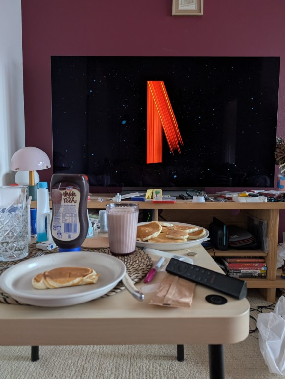
Woke up the next day and spent NYD watching the stranger things finale and repeatedly going “What thats dumb” while eating too many pancakes. Show absolutely shat the bed at the finish line but honeslty the last few laps have been rough
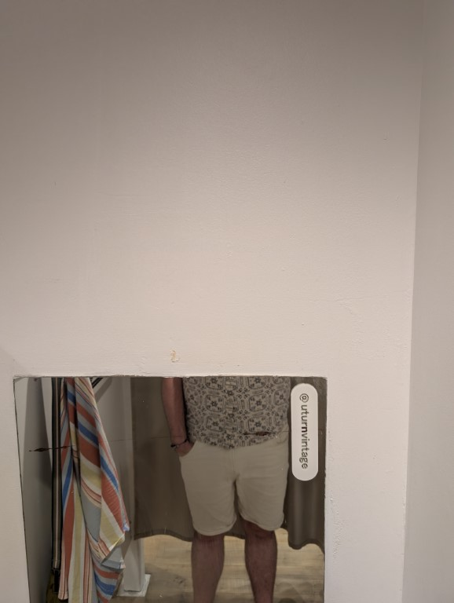
Tried on this shirt and had the most useless mirror ive ever experienced
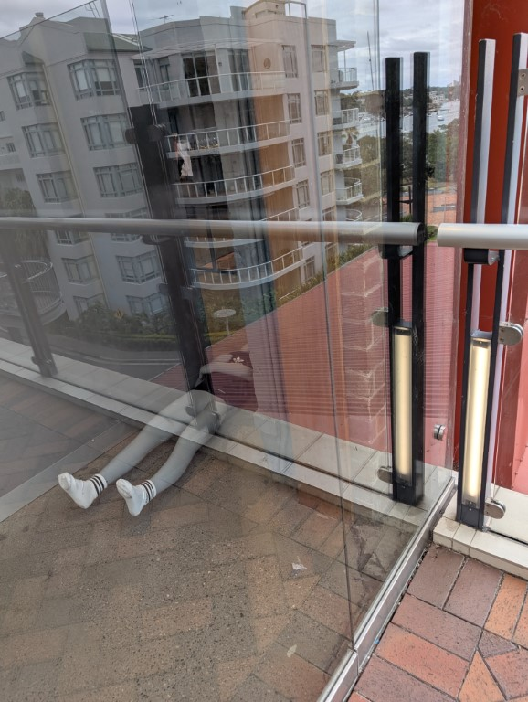
Had to take a pic of this mannequin that looks like it just flat out died
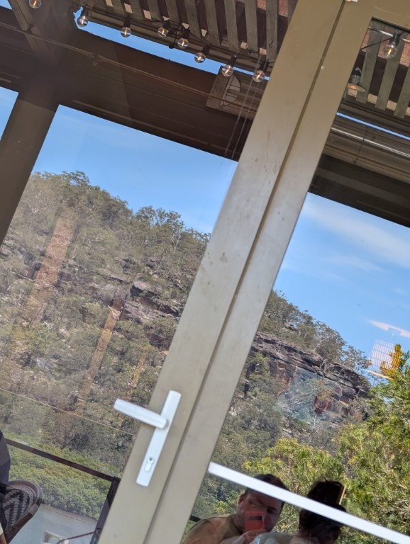
Went out for a birthday lunch with the fam somewhere i think up in the hunter? Or like on the way
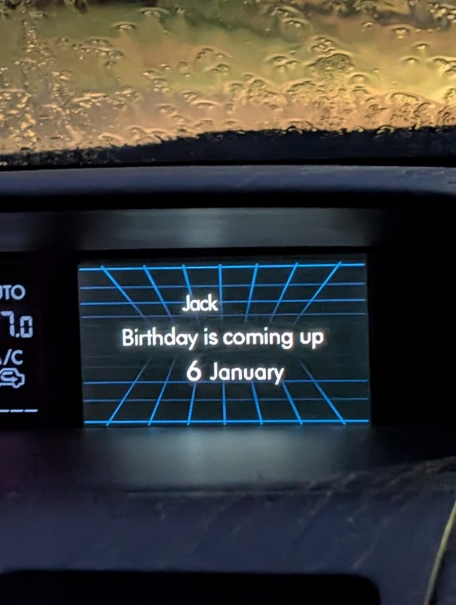
I love that my car tells me that my birthday is coming up
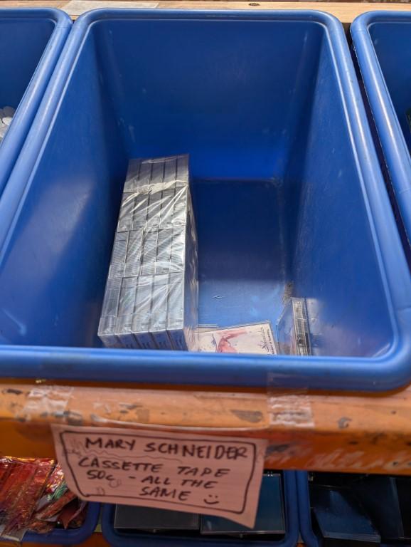
Oh don't you guys worry, there are still cassettes left! (i bought a few more spares and the person at the counter was like “omg i saved these from a dumpster” and i had to hold back “well yeah they were in there for a reason”)
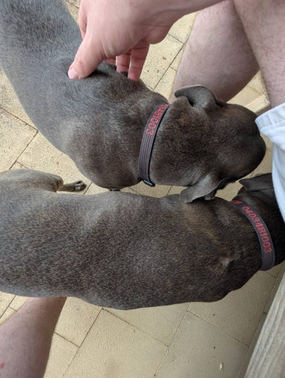
Spent the night before my bday with my mum hous/dog esitting and these staffies are a fucking handful but also lovely
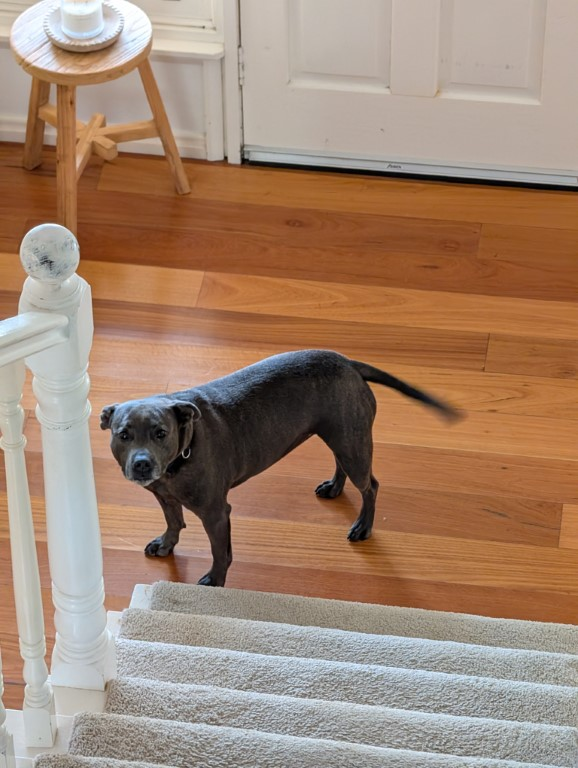
My mum had to leave at 6am on the actual day but i told her to say goodbye, but in doing so one of them ran straight past her and jumped flat onto my chest and being woken up by something banging on your chest is a real fuckin fright and i hope isnt an omen
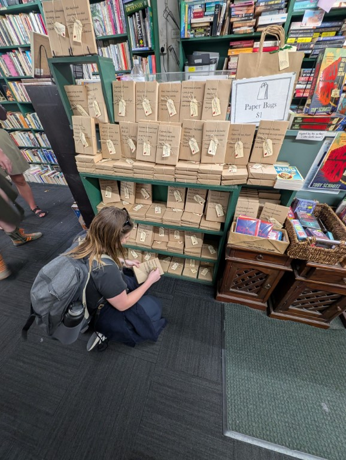
Went to a bookshop with the one person who shouldnt be allowed in a bookshop, and also spent a while trying to guess the mystery books
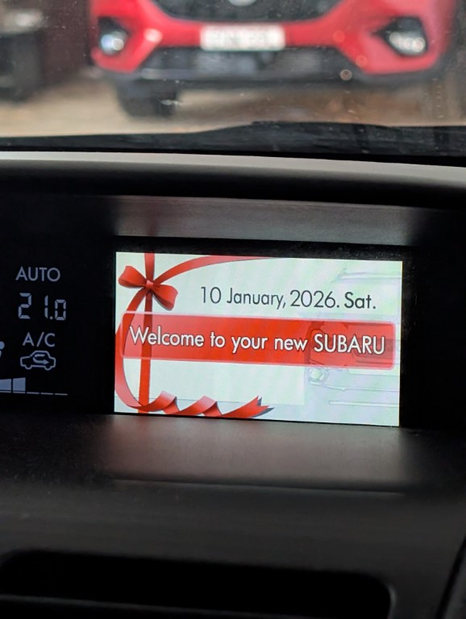
My car also decided to tell me it was its anniversary and this has never happened before im so confused
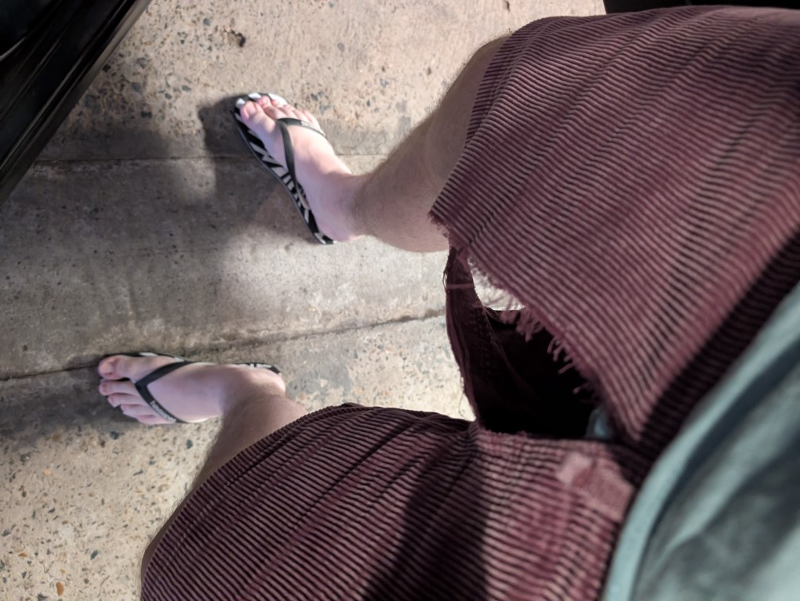
I broke another pair of pants. Yet again contorting to get into the car has doomed them, this time tho! It was my crotch so ive got that pants ripping dick i guess. Also fuck cotton on this has happened twice now with your shorts i gotta learn to stop.
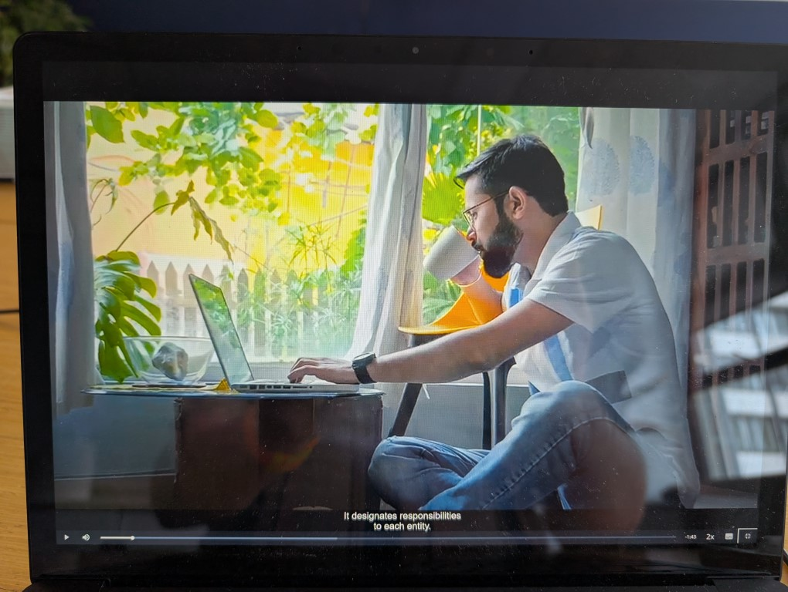
Had to watch some work training stuff and i just cant get over this guys work posture, using the chair as an arm wrest and the 2009 non retina macbook like oh la la who is she
Ok so i got these for christmas from my mum and im so angry at england like wtf is it 2 pound and 9 pence for. ROUND IT UP!!! FUCKING PENIES ok i refuse to google it but i really hope thats how you spell the single cent coin and that i havent just written penis that would be embarassing
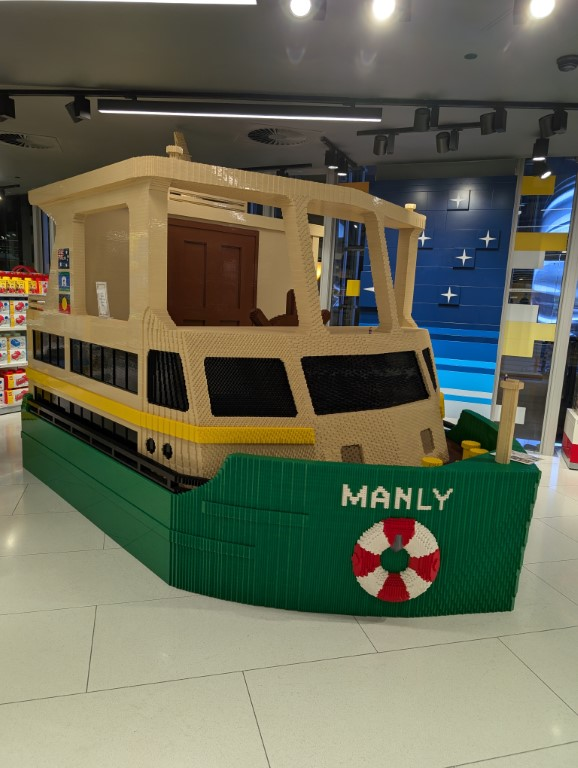
Saw the manly ferry in the lego shop and was star struck
Then rode the manly ferry!
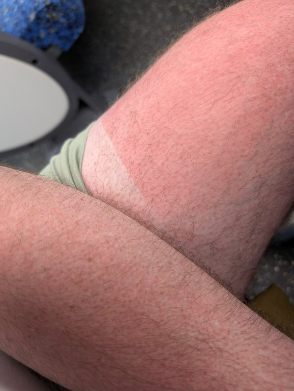
And sat outside and got sunburnt on the 25 mins between getting on and getting off (it sat there for a good 10 mins im so angry at myself)
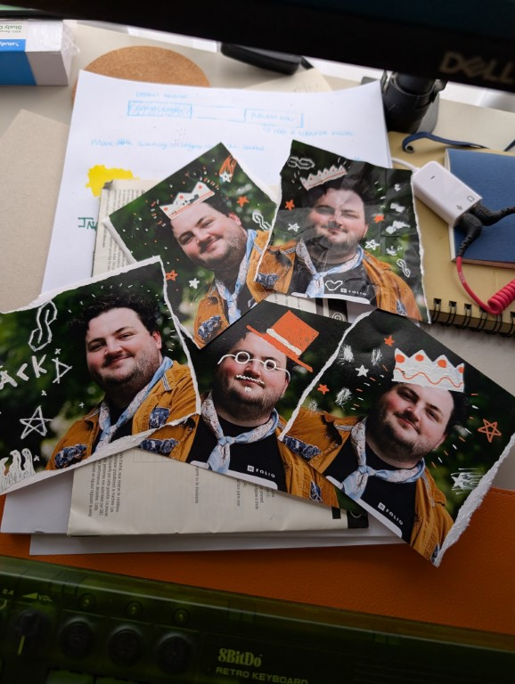
My work took headshots at christmas and i refuse to confirm so ive grifitied mine and i think theyre a fun vibe, theres one more where i made it look like im dead with the grim reaper on my shoulder and i had to stop and be like “no thats too dark and emo”
At the beginning of this year i tried to sit down and make an instagram photo dump of 2025 because everyone else was and whats not a bandwagon without me. But immediately i started scrolling in jan and was just like “oh yeah my grandfather died last year” and had a real moment of “this is just performative number go up bullshit, my accounts on private and ive only got friends on there and even then most of the pics id wanna use have already been sent in here and yall are the people i actually care about” and i call that a valid reason to spin out for a night (i also just think posting to insta yucky zuckerberg needs to be fed an banan laced with uranium to shut him up)
Evidence:
2020: car was finally towed away after being crashed into
2021: northern beaches lockdown
2022 : normal birthday, my brother gave me a ballon with $50 in it that said “contgrats on being negative”
2023 : covid birthday, also received a bag full of newsroom redbubble shit pictured below
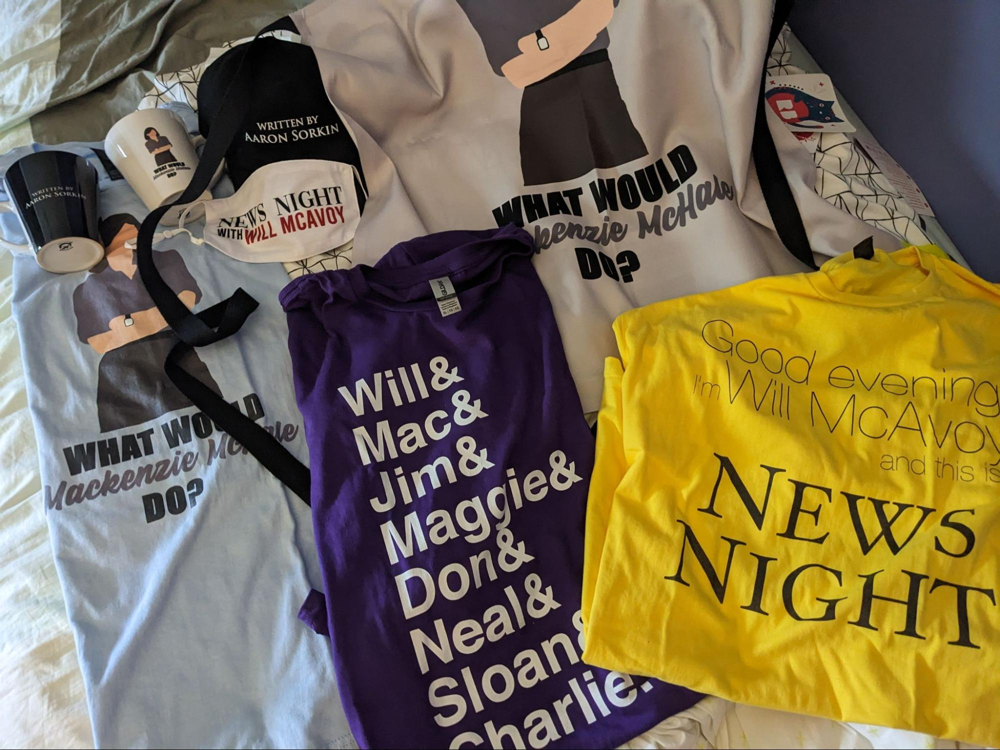
2024 : not that bad but my mum who i was gonna spend the day with had to be up in the country to look after my grandfather, also i bought this shirt and i have no idea where it is

2025 : the day before my grandfather died and so the plans to spend the day with my mum hanging out were squandered as she had to go up and clear out his shit. Also i had to get an JP to sign my license because macquaire bank wasnt happy with me but on the upside? I watched the first lotr movie (am still yet to see any others)
2026: yet again the plans i had to hang with my mum for breakfast/lunch were squandered because a storm hit my grandparents house which is now being rented out and the roof was leaking so my mum and uncle had to go up and fix it. This isnt that bad because i did go for lunch the sunday before so you know
In conclusion, probably not but im a whiney bitch and im gonna whine
Edit ive just remembered that ive had multiple parties and so i should’ve stfu but that was me on my bday so leave me alone
So last year a few times my boss would joke in a somewhat public way that im a bad speller and that you cant trust anything ive written to not have typos in it. And i didnt laugh at the time and did i instead pull him aside and go “hey mate im like 75% sure that im dyslexic can you not make fun of me for that please”? No. Instead I said nothing. But now a new person joined and i just offhandedly said it and her reaction was “oh my partner has that too” so now ive planted the trap. I he does make fun of me for not being a proficient speller infront of her all i hope is she puts 2 and 2 together and goes “why is he bullying jack for being dyslexic” fuck i should just be the adult and tell him
Last year when we were clearing out my grandfathers stuff i was given the opportunity to take any ties i wanted from his collection, i took a bunch being like “well i don't wear them but they are fun” fast forward to the beginning of this year and i had worn them twice. Once to my works christmas party which was the office us themed (terrible theme we all were just wearing business casual stuff) and i wore one of his christmas ties that i remember him wearing while behind the counter of the IGA. the second was to the opening night of hadestown and that was just for me (actually i did get complemented on my tie by the euphoria actres so thats nice no thats not it its orpheus and euridicey)
Anyway this month for some reason every friday when i have to go into the office ive been wearing a tie and i don't know how long im going to keep it up for but it just feels slay? The first week everyone was so shocked by the ties but now its just normal and idk is it as fun if the awe wears off or is that when its more a war of attrition of “can i keep this up for an entire year”
I hate being sunburnt, i get so grumpy on the day it happens and for like a day or so after because its all stingy and like ew. Its also a lot of just being angry at myself for not putting on sunscreen and then its just self loathing for a bit. Then if its pealing thats just fun. But i remember in primary school i got a really bad sunburnt on my back and that was just so miserable i hate it. The sun is my enemy i agree with mr burns block that shit out oh wait i just remembered i was low in vit d in my blood test well i hope this makes up for it.
As i write this outro this has come up on shuffle and it really might be the best song in the paddington musical https://www.youtube.com/watch?v=EyYB2WwAr24 but anway that was january! Next month is feb, famously the shortest month of the year but on a programing note i am spending the back half of next month in Japan with my family. And i thought i came back on the first but turns out its an overnight so i land on the second so! Be prepared for a sleep deprived recap next month to come into your inboxes later than youd expect but i shall not drop this i love writing these i have a mouth and must scream and infact am screaming currently you cant stop me even if you try.
le end